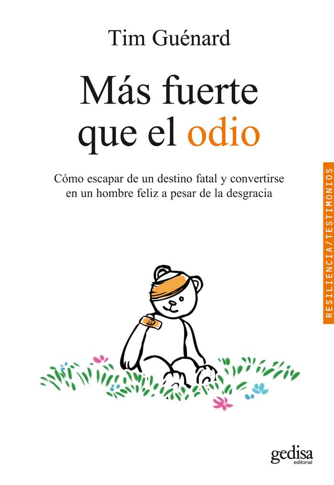

Mas fuerte que el odio

Mas fuerte que el odio
Es una autobiografía escrita por un hombre que, desde su infancia, sufrió abusos y violencia
extrema por parte de su padre. A través de este relato, Tim narra su historia de superación
personal, pasando de una niñez marcada por el sufrimiento y la desesperanza a encontrar una
forma de vida plena, libre de odio y rencor.
Desde pequeño, Tim experimentó un entorno familiar
violento, donde su padre lo maltrataba físicamente y emocionalmente. A pesar de las
adversidades, Tim encontró consuelo en el deporte y en la amistad de personas que lo
apoyaron, lo que le permitió construir una vida distinta a la de su familia.
El libro resalta la
importancia de la resiliencia, la compasión y el perdón. A lo largo de su vida, Tim fue capaz de
superar su dolor y resentimiento hacia su padre, lo que le permitió liberarse del odio que había
marcado su existencia. Su historia es un testimonio de cómo el amor, el apoyo de los demás y
la fuerza interna pueden ser más poderosos que las circunstancias adversas
inicio